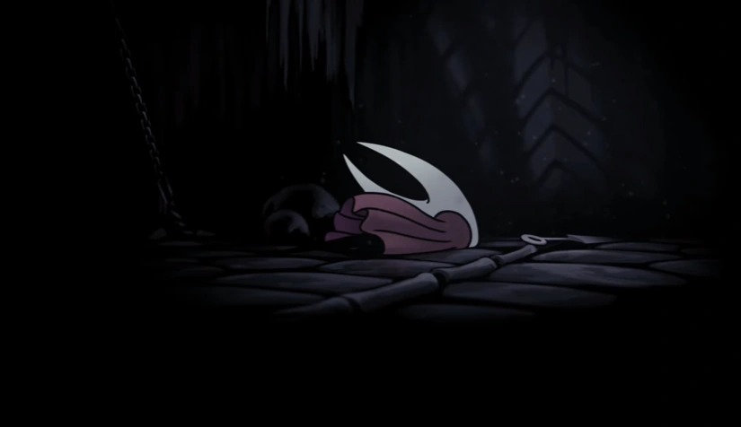
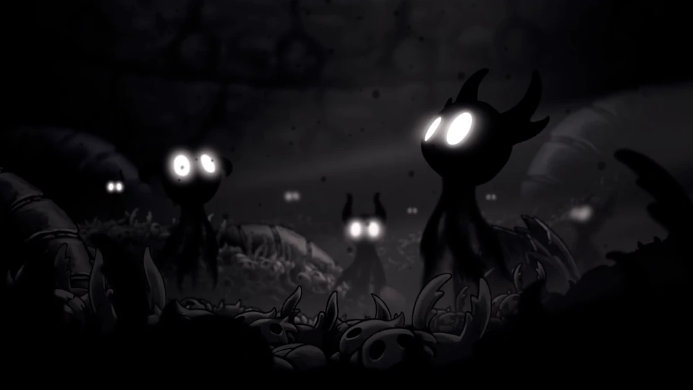
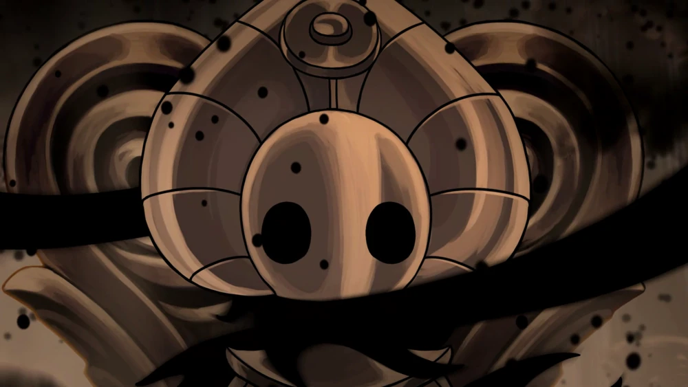

| Final | Nome | Descrição |
|---|---|---|
 |
O Cavaleiro Vazio | Para adquirir esse final, o jogador deve:
Nesse final, o Cavaleiro absorve a infecção para si mesmo e é selado dentro do Ovo Negro. |
|  | Irmãos Selados | Para adquirir esse final, o jogador deve:
Nesse final, o Cavaleiro também absorve a infecção, porém, Hornet é presa junto com ele dentro do templo. |
|  | Não Sonhe Mais | Para adquirir esse final, o jogador deve:
Nesse final, Hornet segura o Cavaleiro Vazio para o Cavaleiro entrar no sonho dele, para matar a infecção diretamente. O Cavaleiro libera a sua sombra e chicoteia a Radiância até ela ser levada para o Vazio e banida. Após tudo isso, Hornet acorda e vê apenas a carapaça do Cavaleiro quebrada ao meio. |
|  | Abrace o Vazio | Para adquirir esse final, o jogador deve:
Após passar pelos primeiros 4 panteões, o jogador libera o Panteão de Hallownest, onde o Cavaleiro precisa matar uma versão dificultada de todos os 40 chefes do jogo em sequência, além de dois novos chefes no final, que são consideravelmente mais difíceis que qualquer outra batalha no jogo. Após matar o último chefe, a Radiância Absoluta, ela explode em essência e o reino é livrado da infecção. |